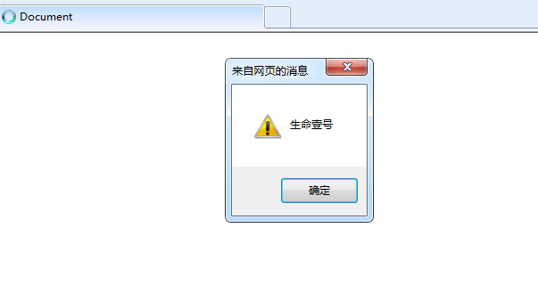

JavaScript背景
Web前端有三层：
HTML：从语义的角度，描述页面结构
CSS：从审美的角度，描述样式（美化页面）
JavaScript：从交互的角度，描述行为（实现业务逻辑和页面控制）
发展历史
JavaScript诞生于1995年。布兰登 • 艾奇（Brendan Eich，1961年～），1995年在网景公司，开发除了JavaScript语言。
JavaScript是由网景公司（Netscape）发明，最初命名为LiveScript；1995年12月与SUN公司合作，因市场宣传需要，改名为 JavaScript。
后来 Sun 公司 被Oracle收购，JavaScript版权归Oracle所有。
备注：由于当时Java这个语言特别火，所以为了傍大牌，就改名为JavaScript。如同“北大”和“北大青鸟”的关系。“北大青鸟”就是傍“北大”大牌。
同时期还有其他的网页语言，比如VBScript、JScript等等，但是后来都被JavaScript打败了，所以现在的浏览器中，只运行一种脚本语言就是JavaScript。
1996年，微软为了抢占市场，推出了JScript在IE3.0中使用。
1996年11月网景公司将JS提交给ECMA(国际标准化组织)成为国际标准，用于对抗微软。
JavaScript是世界上用的最多的脚本语言。
JavaScript的发展：蒸蒸日上
2003年之前，JavaScript被认为“牛皮鲜”，用来制作页面上的广告，弹窗、漂浮的广告。什么东西让人烦，什么东西就是JavaScript开发的。所以很多浏览器就推出了屏蔽广告功能。
2004年，JavaScript命运开始改变。那一年，谷歌公司开始带头使用Ajax技术，Ajax技术就是JavaScript的一个应用。并且，那时候人们逐渐开始提升用户体验了。Ajax有一些应用场景。比如，当我们在百度搜索框搜文字时，输入框下方的智能提示，可以通过Ajax实现。比如，当我们注册网易邮箱时，能够及时发现用户名是否被占用，而不用调到另外一个页面。
2007年乔布斯发布了第一款iPhone，这一年开始，用户就多了上网的途径，就是用移动设备上网。
JavaScript在移动页面中，也是不可或缺的。并且这一年，互联网开始标准化，按照W3C规则三层分离，JavaScript越来越被重视。
2010年，人们更加了解HTML5技术，HTML5推出了一个东西叫做Canvas（画布），工程师可以在Canvas上进行游戏制作，利用的就是JavaScript。
2011年，Node.js诞生，使JavaScript能够开发服务器程序了。
如今，WebApp已经非常流行，就是用网页技术开发手机应用。手机系统有iOS、安卓。比如公司要开发一个“携程网”App，就需要招聘三队人马，比如iOS工程师10人，安卓工程师10人，前端工程师10人。共30人，开发成本大；而且如果要改版，要改3个版本。现在，假设公司都用web技术，用html+css+javascript技术就可以开发App。也易于迭代（网页一改变，所有的终端都变了）。
虽然目前WebApp（Web应用）在功能和性能上的体验远不如Native App（原生应用），但是“在原生App中内嵌一部分H5页面”已经是一种趋势。
JavaScript介绍
JavaScript入门易学性
JavaScript对初学者比较友好、简单易用。可以使用任何文本编辑工具编写，只需要浏览器就可以执行程序。
JavaScript是有界面效果的（相比之下，C语言只有白底黑字）。
JavaScript是弱变量类型的语言，变量只需要用 var/let/const 来声明。而Java中变量的声明，要根据变量的类型来定义。
比如Java中需要定义如下变量：
int a;
float a;
double a;
String a;
boolean a;而JavaScript中，只需要用一种方式来定义：
// ES5 写法
var a;
// ES6 写法
const a;
let a;JavaScript是前端语言
JavaScript是前端语言，而不是后台语言。
JavaScript运行在用户的终端网页上，而不是服务器上，所以我们称之为“前端语言”。就是服务于页面的交互效果、美化，不能操作数据库。
后台语言是运行在服务器上的，比如PHP、ASP、JSP等等，这些语言都能够操作数据库，都能够对数据库进行“增删改查”操作。
备注：Node.js是用 JavaScript 开发的，现在也可以基于 Node.js 技术进行服务器端编程。
JavaScript的组成
JavaScript基础分为三个部分：
ECMAScript：JavaScript 的语法标准。包括变量、表达式、运算符、函数、if语句、for语句等。
DOM：Document Object Model（文档对象模型），操作页面上的元素的API。比如让盒子移动、变色、改变大小、轮播图等等。
BOM：Browser Object Model（浏览器对象模型），操作浏览器部分功能的API。通过BOM可以操作浏览器窗口，比如弹框、控制浏览器跳转、获取浏览器分辨率等等。
通俗理解就是：ECMAScript 是 JS 的语法；DOM 和 BOM 浏览器运行环境为 JS提供的API。
JavaScript 的特点
特点1：解释型语言
JavaScript 是解释型语言，不需要事先被翻译为机器码；而是边翻译边执行（翻译一行，执行一行）。
什么是「解释型语言」？详见下一段。
由于少了实现编译这一步骤，所以解释型语言开发起来尤为方便，但是解释型语言运行较慢也是它的劣势。不过解释型语言中使用了JIT技术，使得运行速度得以改善。
特点2：单线程
特点3：ECMAScript标准
ECMAScript是一种由 ECMA 国际（前身为欧洲计算机制造商协会,英文名称是European Computer Manufacturers Association）制定和发布的脚本语言规范。
JavaScript是由公司开发而成的，问题是不便于其他的公司拓展和使用。所以欧洲的这个ECMA的组织，牵头制定JavaScript的标准，取名为ECMAScript。
简单来说，ECMAScript不是一门语言，而是一个标准。ECMAScript 规定了JS的编程语法和基础核心知识，是所有浏览器厂商共同遵守的一套JS语法工业标准。
ECMAScript在2015年6月，发布了ECMAScript 6版本（ES6），语言的能力更强（也包含了很多新特性）。但是，浏览器的厂商不会那么快去追上这个标准，需要时间。
编程语言的分类
翻译器
计算机不能直接理解任何除机器语言以外的语言，所以必须要把程序员所编写的语言翻译成机器语言，计算机才能执行程序。程序语言翻译成机器语言的工具，被称为翻译器。
由此可见，所谓的“翻译”，指的是翻译成计算机能够执行的指令。
翻译器翻译的方式有两种：一种是编译，另一种是解释。两种方式之间的区别在于翻译的时机不同。
编译器：在代码执行之前，事前把所有的代码一次性翻译好，生成中间代码文件，然后整体执行。
解释器：边翻译，边执行（在代码执行时进行及时翻译，并立即执行）。当编译器以解释的方式运行时，也称之为解释器。
对应的语言，称之为“编译型语言”、“解释型语言”。
编译型语言
定义：事先把所有的代码一次性翻译好，然后整体执行。
优点：运行更快。
不足：移植性不好，不跨平台。
编译型语言举例：c、c++
比如说，c语言的代码文件是.c后缀，翻译之后文件是.obj后缀，系统执行的是 obj 文件；再比如， java 语言的代码文件是.java后缀，翻译之后的文件是.class后缀。（注意，Java 语言不是严格的 编译型语言，这个一会儿会讲）
解释型语言
定义：边翻译边执行（翻译一行，执行一行），不需要事先一次性翻译。
优点：移植性好，跨平台。
缺点：运行更慢。
解释型语言举例：JavaScript、php、Python。
Java语言
Java 语言既不是编译型语言，也不是解释型语言。翻译过程：
（1）编译：.java代码文件先通过 javac 命令编译成.class文件。
（2）执行：.class文件再通过 jvm 虚拟机，解释执行。有了 jvm 的存在，让 java 跨平台了。
开始写第一行JavaScript代码
JavaScript 代码的书写位置在哪里呢？这个问题，也可以理解成：引入 js 代码，有哪几种方式。
方式1：行内式
代码举例：
<input type="button" value="点我点我" onclick="alert('千古壹号')" />完整的可执行代码如下：
<!DOCTYPE html>
<html lang="en">
<head>
<meta charset="UTF-8" />
<meta name="viewport" content="width=device-width, initial-scale=1.0" />
<title>Document</title>
</head>
<body>
<input type="button" value="点我点我" onclick="alert('千古壹号的方式1')" />
</body>
</html>
分析：
可以将单行或少量 JS 代码写在HTML标签的事件属性中（以 on 开头的属性），比如放在上面的
onclick点击事件中。这种书写方式，不推荐使用，原因是：可读性差，尤其是需要编写大量 JS代码时，容易出错；引号多层嵌套时，也容易出错。
关于代码中的「引号」，在HTML标签中，我们推荐使用双引号, JS 中我们推荐使用单引号。
方式2、内嵌式
我们可以在html 页面的 <body> 标签里放入<script type=”text/javascript”></script>标签对儿，并在<script>里书写JavaScript 代码：
<!DOCTYPE html>
<html lang="en">
<head>
<meta charset="UTF-8">
<title>Document</title>
</head>
<body>
<script type="text/javascript">
// 在这里写 js 代码
alert('千古壹号的方式2');
console.log('qianguyihao 方式2');
</script>
</body>
</html>分析：
text表示纯文本，因为JavaScript也是一个纯文本的语言。
可以将多行JS代码写到
<script>标签中。内嵌式 JS 是学习时常用的方式。
方式3：引入外部的 JS 文件
<!DOCTYPE html>
<html lang="en">
<head>
<meta charset="UTF-8">
<title>Document</title>
</head>
<body>
<!-- 引入外部的 js 文件 -->
<script src="tool.js"></script>
</body>
</html>上面这段代码，依然是放到body标签里，可以和内嵌的js代码并列。
另外，引用外部 JS文件的 script 标签中间不可以再写代码。
总结：
我们在实战开发中，基本都是采用方式3，因为这种方式，可以确保 html 文件和 js 文件是分开的，有利于代码的结构化和复用。很少会有人把一大堆 js 代码塞到 html 文件里。
JS一些简单的语法规则
学习程序，是有规律可循的，程序会有有相同的部分，这些部分就是一种规定，不能更改，我们成为：语法。
（1）JavaScript对换行、缩进、空格不敏感。每一条语句以分号结尾。
也就是说：
代码一：
<script type="text/javascript">
alert("今天蓝天白云");
alert("我很高兴");
</script>等价于代码二：
<script type="text/javascript">
alert("今天蓝天白云");alert("我很高兴");
</script>备注：每一条语句末尾要加上分号，虽然分号不是必须加的，如果不写分号，浏览器会自动添加，但是会消耗一些系统资源。
（2）所有的符号，都是英语的。比如括号、引号、分号。
如果你用的是搜狗拼音，建议不要用shift切换中英文（可以在搜狗软件里进行设置），不然很容易输入中文的分号；建议用ctrl+space切换中英文输入法。
（3）严格区分大小写。
注释
我们不要把 HTML、CSS、JavaScript三者的注释格式搞混淆了。
HTML 的注释
<!-- 我是注释 -->CSS的注释
<style type="text/css">
/*
我是注释
*/
p{
font-weight: bold;
font-style: italic;
color: red;
}
</style>注意：CSS只有/* */这种注释，没有//这种注释。而且注释要写在<style>标签里面才算生效哦。
JavaScript 的注释
单行注释：
// 我是注释多行注释：
/*
多行注释1
多行注释2
*/补充：VS Code中，单行注释的快捷键是「Ctrl + /」，多行注释的默认快捷键是「Alt + Shift + A」。
当然，如果你觉得多行注释的默认快捷键不方便，我们还可以修改默认快捷键。操作如下：
VS Code –> 首选项 –> 键盘快捷方式 –> 查找“注释”这两个字 –> 将原来的快捷键修改为「Ctrl + Shift + /」。
Javascript 输入输出语句
弹出警告框：alert语句
我们要学习的第一个语句，就是alert语句。
代码举例如下：
<!DOCTYPE html>
<html lang="en">
<head>
<meta charset="UTF-8" />
<meta name="viewport" content="width=device-width, initial-scale=1.0" />
<title>Document</title>
</head>
<body>
<script>
alert('千古壹号');
</script>
</body>
</html>
alert（英文翻译为“警报”）的用途：弹出“警告框”。
alert("")警告框的效果如下：

这个警告框，在IE浏览器中长这样：

上面的代码中，如果写了两个alert()语句的话，网页的效果是：弹出第一个警告框，点击确定后，继续弹出第二个警告框。
控制台输出：console.log(“”)
console.log("")表示在控制台中输出。console表示“控制台”，log表示“输出”。
在Chrome浏览器中，按F12即可打开控制台，选择「console」栏，即可看到打印的内容。
console.log("")效果如下：

控制台是工程师、程序员调试程序的地方。程序员经常使用这条语句输出一些东西，来测试程序是否正确。
普通人是不会在意控制台的，但是有些网站另藏玄机。有个很有意思的地方是，百度首页的控制台，悄悄地放了一段招聘信息：
毕竟做前端的人是经常使用控制台的。
总结：alert() 主要用来显示消息给用户，console.log() 用来给程序员自己调试用的。
弹出输入框：prompt()语句
prompt()就是专门用来弹出能够让用户输入的对话框。用得少，测试的时候偶尔会用。
JS代码如下：
var a = prompt("请随便输入点什么东西吧");
console.log(a);上方代码中，用户输入的内容，将被传递到变量 a 里面，并在控制台打印出来。
效果如下：
prompt()语句中，用户不管输入什么内容，都是字符串。
alert()和prompt()的区别：
- alert() 可以直接使用。
- prompt() 会返回用户输入的内容。我们可以用一个变量，来接收用户输入的内容。
免责声明：资料来源：千古壹号，仅供学习使用
更多知识欢迎关注微信公众号“ 51 学代码 ”